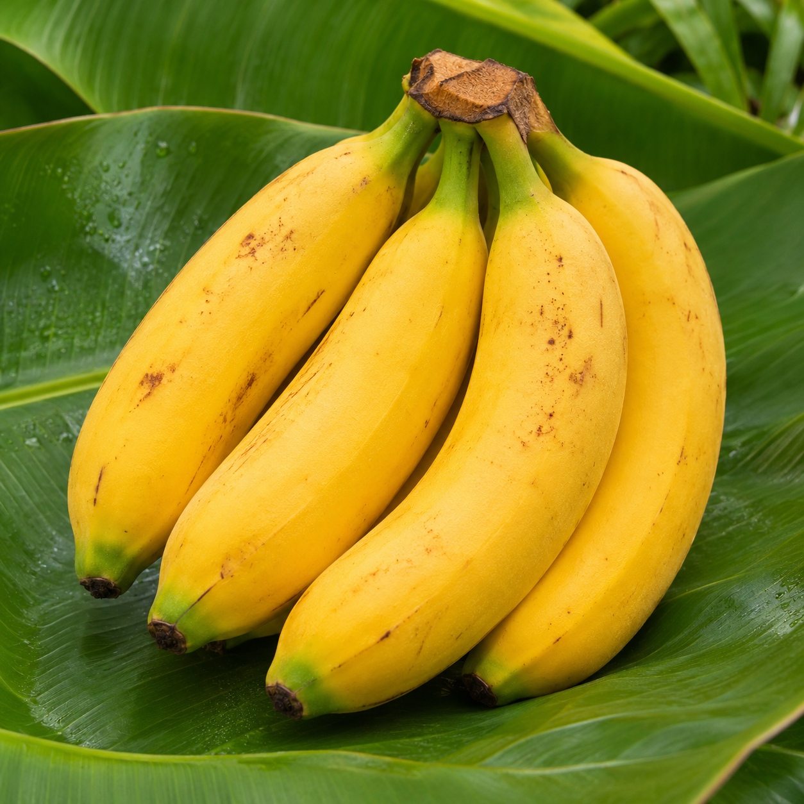
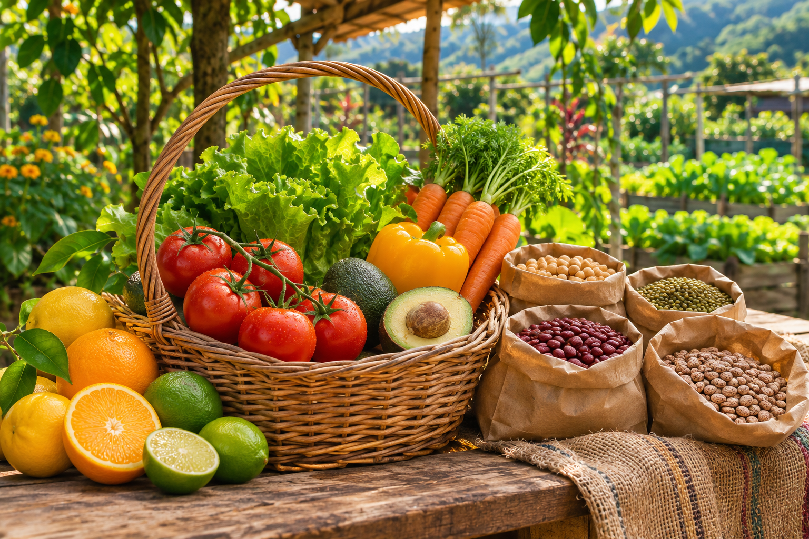
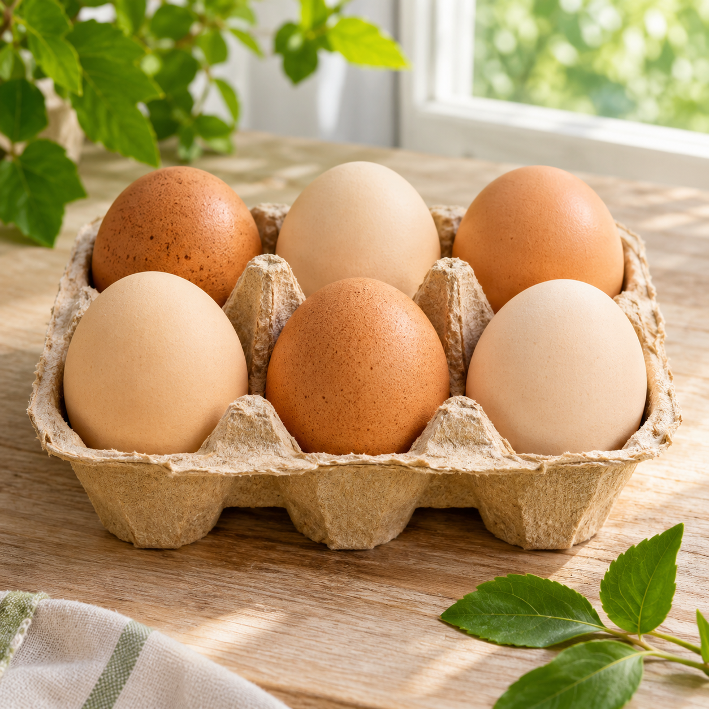
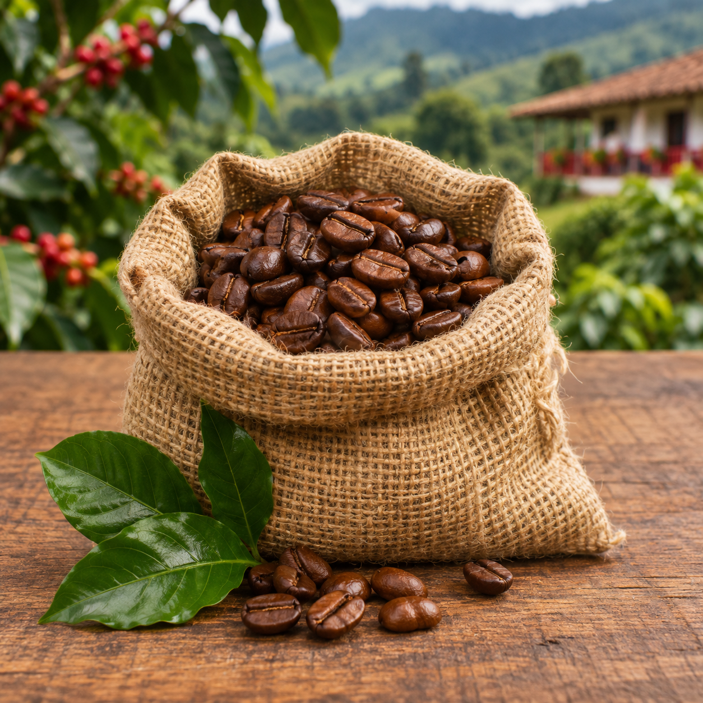
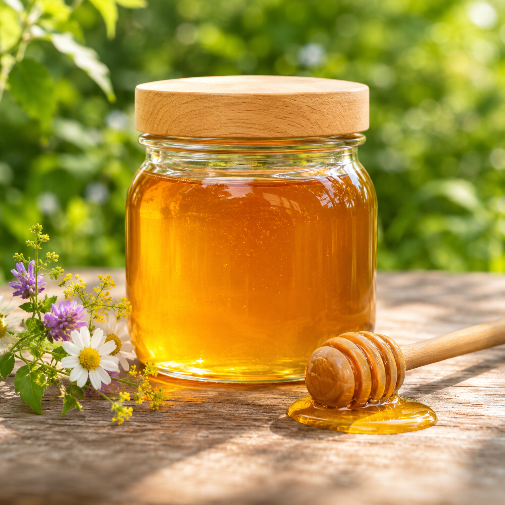
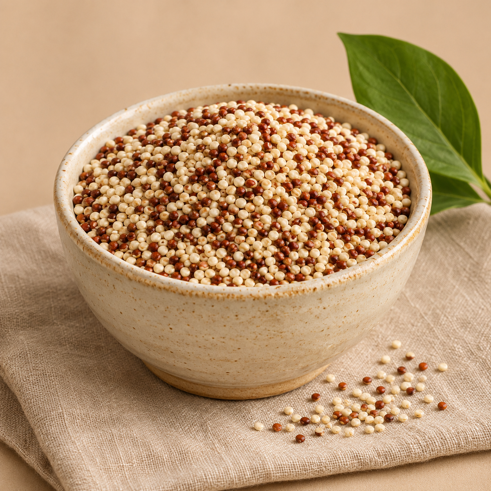
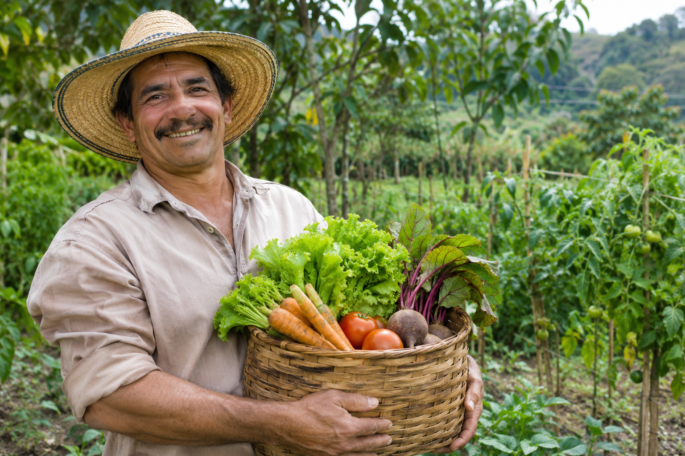

Banano orgánico500 g$3.900
Productos sostenibles directo de quienes los hacen.
Explorar productos ↓
FRESCO · LOCAL · CON PROPÓSITO





Apoyamos a familias campesinas y emprendimientos colombianos con una economía más justa.